Video Storyboard
Time: 0:00:00
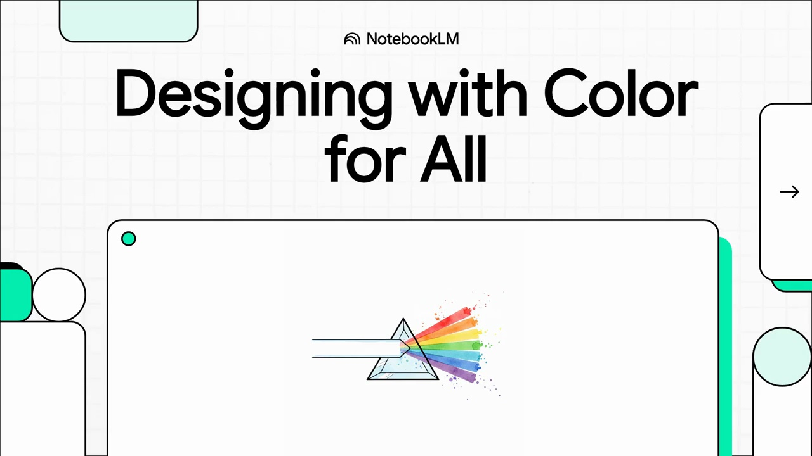
Okay, so let's talk about something we see every single day. Color on our screens, the blues, the greens, the grays. They aren't just there to look pretty. They're fundamental language that helps us get around in our digital world, they guide our eyes, they signal what we can do. But what happens when that language isn't speaking to everyone?
Time: 0:00:18
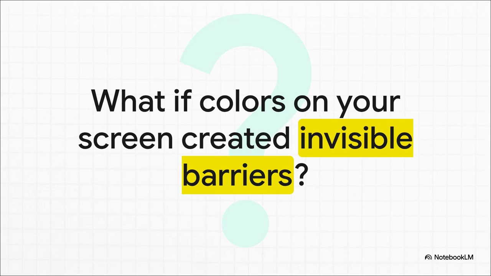
I mean, really think about that. What if the very colors that are supposed to help you actually hide critical information, what if they make it impossible to finish a simple task or even figure out what you're supposed to be looking at? Because for a huge part of the population,
Time: 0:00:30
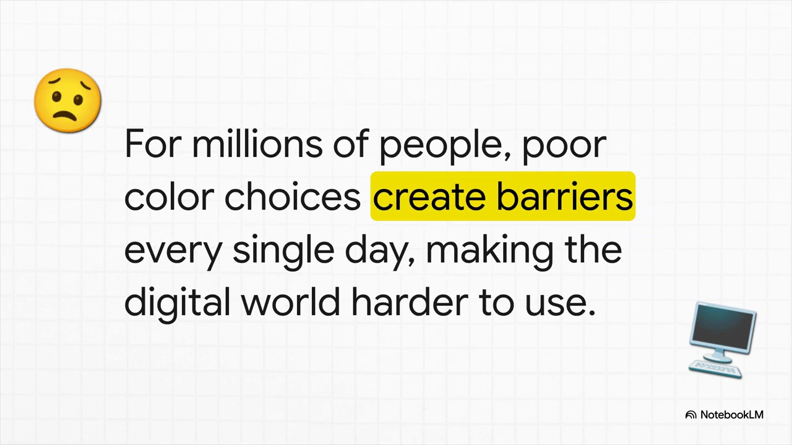
that's their reality. Poor color choices create these invisible walls every single day. So today we're Gonna break down how we can use color, not just to Be beautiful, but to be inclusive.
Time: 0:00:43
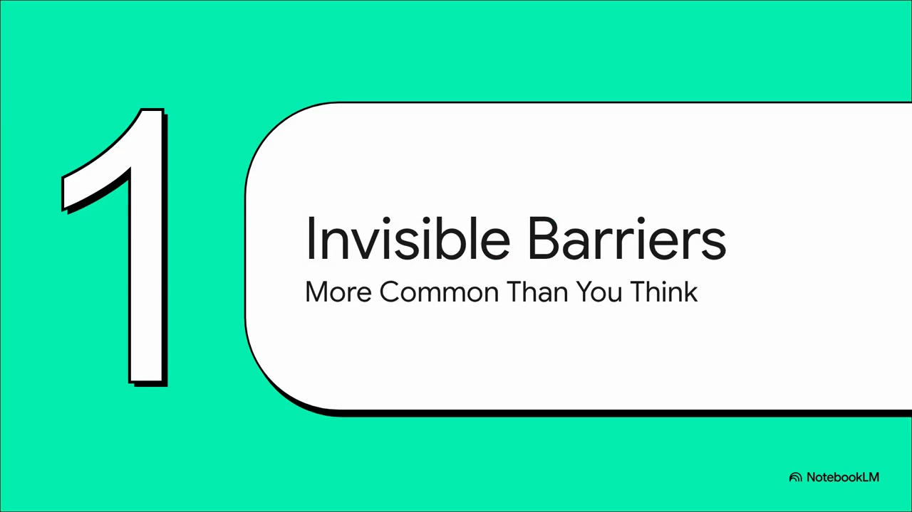
Now, it's really easy to think of this stuff as you know, an edge case, something that only affects a tiny number of people. But the truth is it's way more common than you'd think. The web Content Accessibility Guidelines
Time: 0:00:52
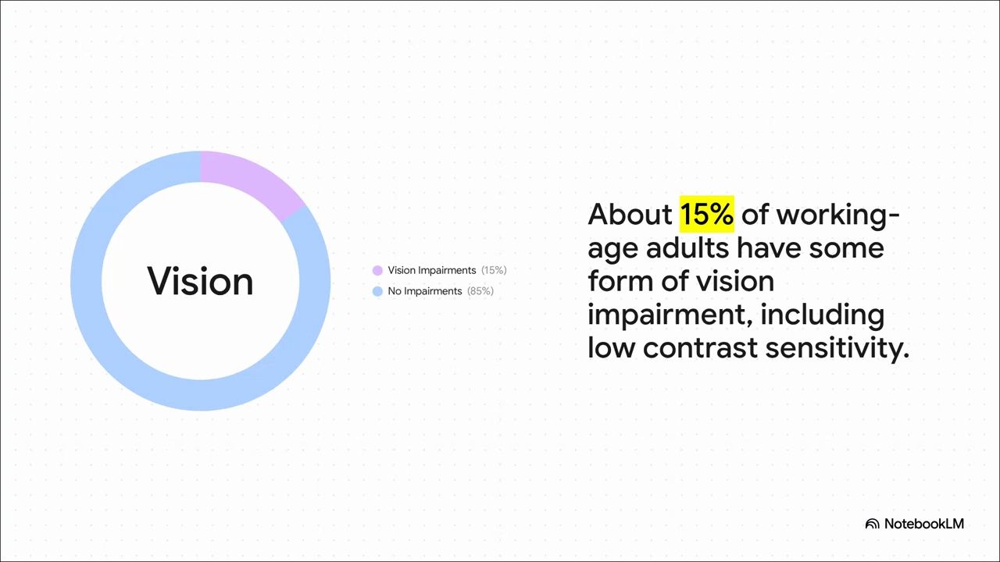
or WCAG, which is basically the global rule book for this, tells us that about 15% of working age adults have some kind of vision impairment. That's a huge number of people who might be struggling with designs that don't think about how color is perceived. So this isn't the niche problem at all. It's a mainstream design challenge. And here's
Time: 0:01:13
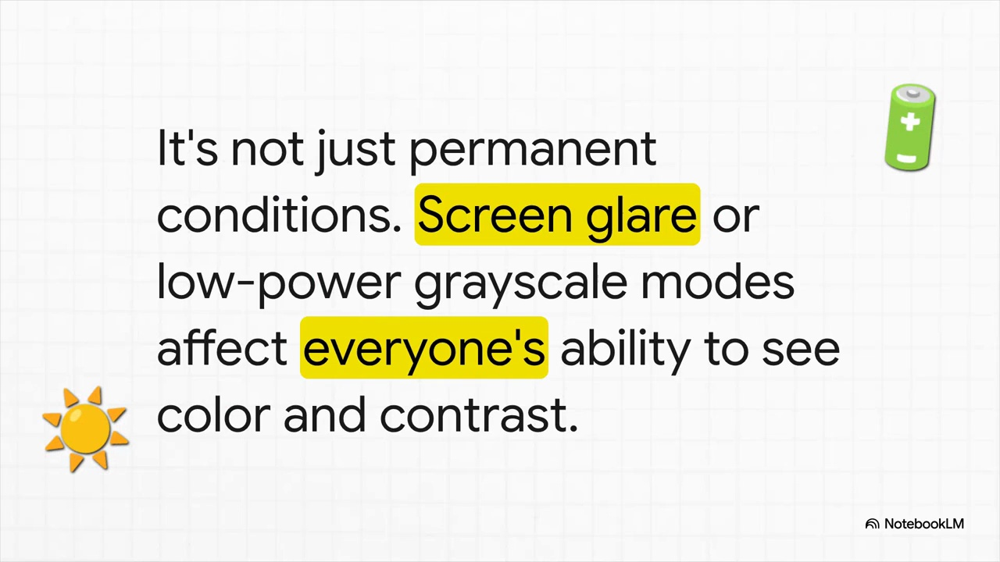
The thing, it's not just about permanent conditions. We've all been there, right? Trying to read your phone screen in bright sunlight, squinting to see what's going on, or maybe you've Used a low power mode that Makes everything gray scale. In those moments, all of us are experiencing what you could call a situational Disability, where color and Contrast suddenly become absolutely critical. So designing for Accessibility, it really Is just designing for Everyone. So
Time: 0:01:38
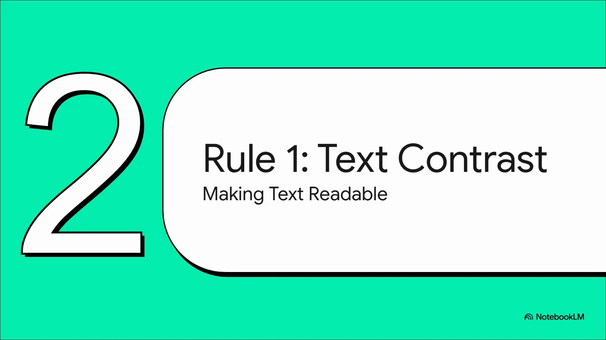
how do we actually start breaking down these barriers? Well, the first and most fundamental rule is just about making sure people can read the words on the screen, and it all boils down to one simple concept. Contrast. Simply put,
Time: 0:01:51
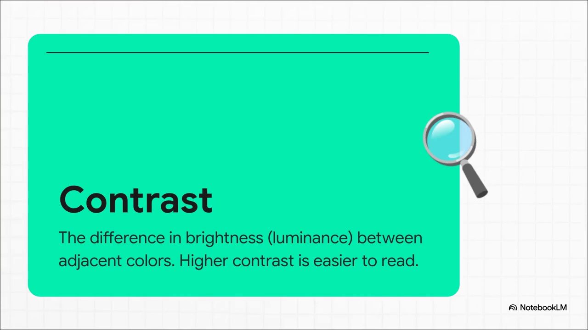
Contrast is just the difference in brightness between two colors next to each other, like text and its background. The bigger that difference, the easier it is to read. You know, think black text on a white background, that's maximum contrast, but light gray text on a slightly lighter gray background. That's where things get messy.
Time: 0:02:11
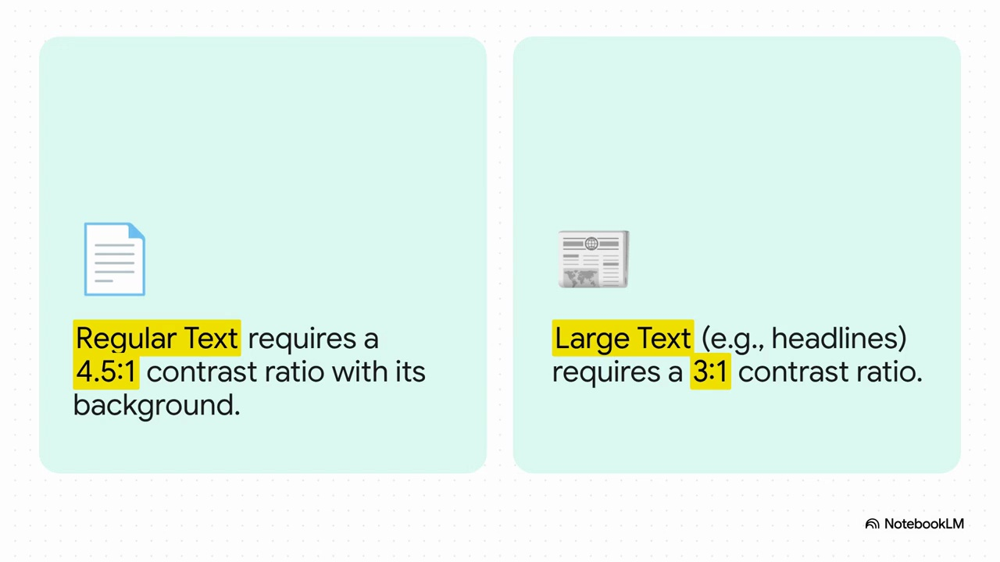
And Thankfully we don't have to guess. There are super clear guidelines for This. For Normalized text, the standard is a contrast ratio of at least 4.5 to one. Now, if the text is bigger, that requirement relaxes a bit down to three to one, just because larger text is naturally easier to see. These numbers are Pretty much our go-to benchmarks for readability.
Time: 0:02:31
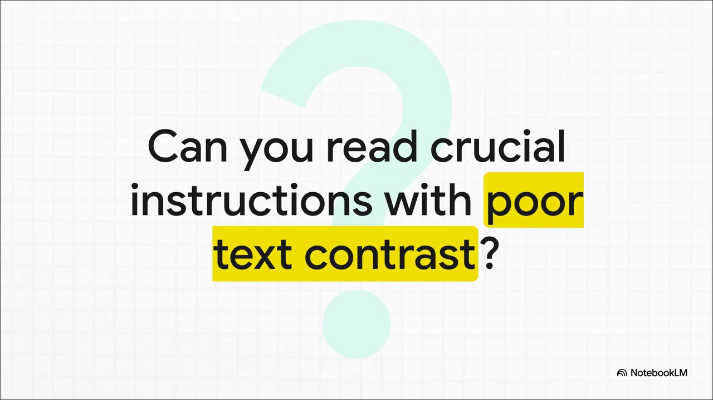
Just put yourself in this scenario for a second. Imagine you're trying to submit a really important form online, and the final confirm button has text that's so faint. You're not even sure what it says. That feeling of frustration, of uncertainty, that is exactly what poor text contrast creates, and it's a barrier that's so easy to avoid.
Time: 0:02:51
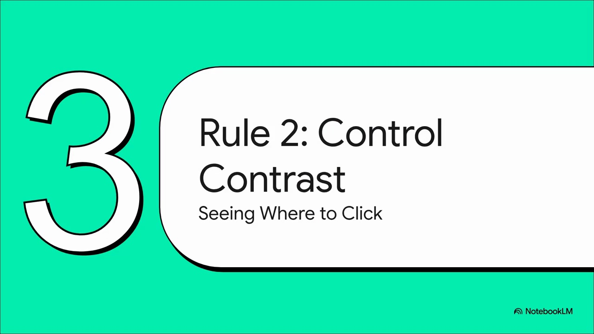
Okay, so that same idea of contrast leads us right into our second rule. Once we can actually read the text, we need to be able to see the interactive parts of a page, you know, the buttons, the icons, the little input fields. These are the controls that let us actually do things. And just like with text, there's a clear benchmark here
Time: 0:03:06
for user interface components and other graphics like say the border around a text box or an important icon. The key parts need to contrast ratio of at least three to one against the background. This just makes sure they don't fade away and become invisible.
Time: 0:03:23
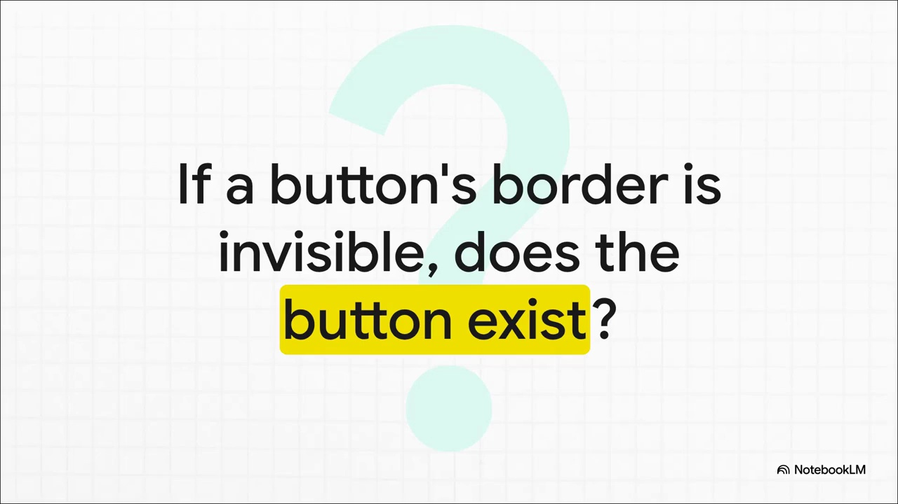
Ask yourself this, if a button doesn't have a solid color and its outline is the only thing that defines its shape, what happens when that outline is so faint it just blends into the page? Well, the button basically vanishes and you can't click what you can't see. That's why the contrast of these elements is every bit as important as the text.
Time: 0:03:41
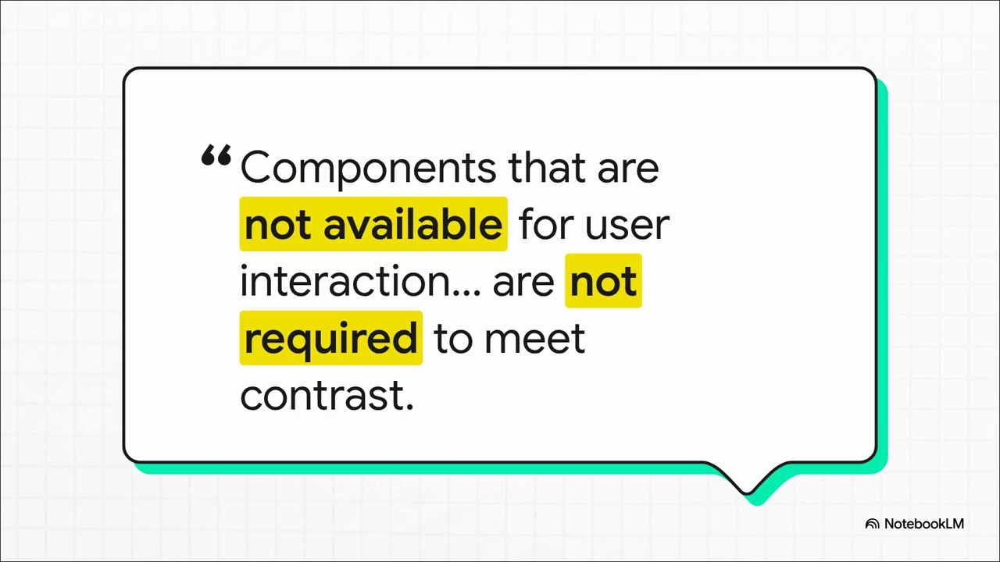
Now, there is one key exception to this rule. I should mention, if a button or a control is disabled, you know, grayed out, meaning you can't interact with it anyway. It doesn't have to meet these contrast rules. The focus is all about making sure the things people can use are clearly visible. And this brings us to our third and final rule,
Time: 0:03:57
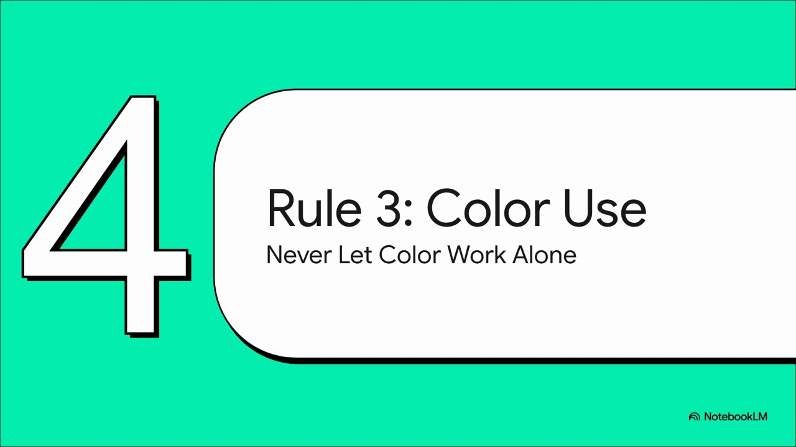
and it's a really big one. It's the idea that color, as powerful as it is, should never ever be the only way you're communicating an important piece of information. Color always needs a partner. The solution here is so simple and elegant.
Time: 0:04:10
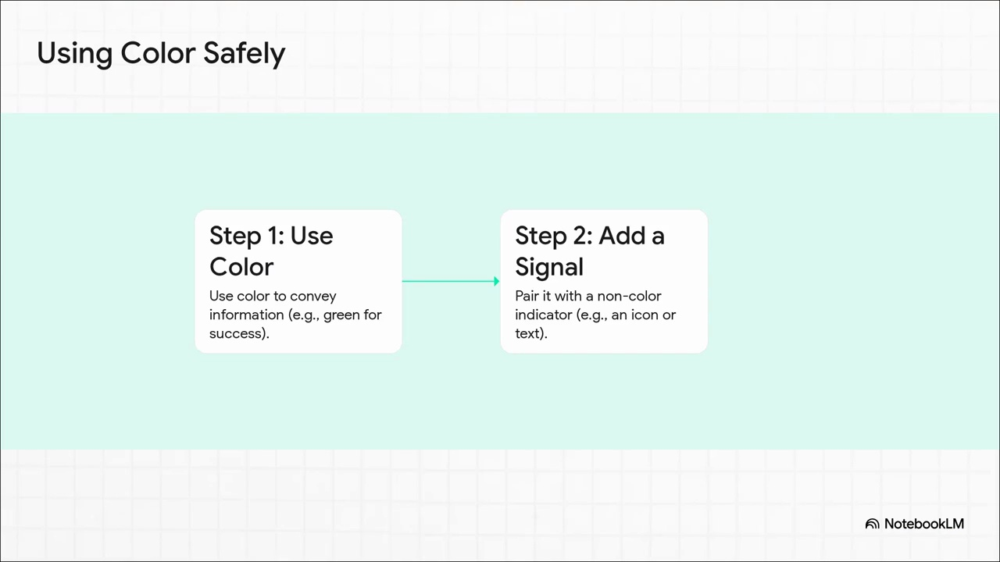
By all means, use color green for success, red for an error. That's intuitive, it's great, but the trick is to always pair that color with a second signal that doesn't rely on vision at all. So a green success message should also have say a check mark icon. An error message needs more than just being red, and we've got a whole toolbox
Time: 0:04:30

of these non-color signals to choose from. Icons are probably the most common simple text labels like error or required work perfectly and underline on a link, a pattern, fill on a chart, or even using a different shape. These can all do the job of reinforcing the message so that it gets through to absolutely everyone, no matter how they perceive color.
Time: 0:04:50
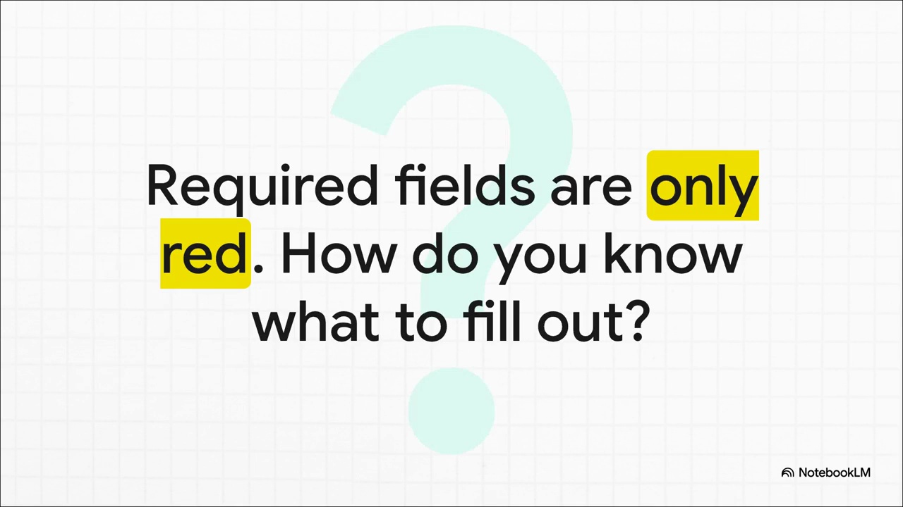
And this is where it gets super practical. Just picture a signup form where the required fields are only marked with red text. If you have a type of colorblindness where red and black look pretty much the same, that form is literally impossible to complete. You have no way of knowing what's required and what's optional. A simple asterisk right next to the red text problem solved.
Time: 0:05:10
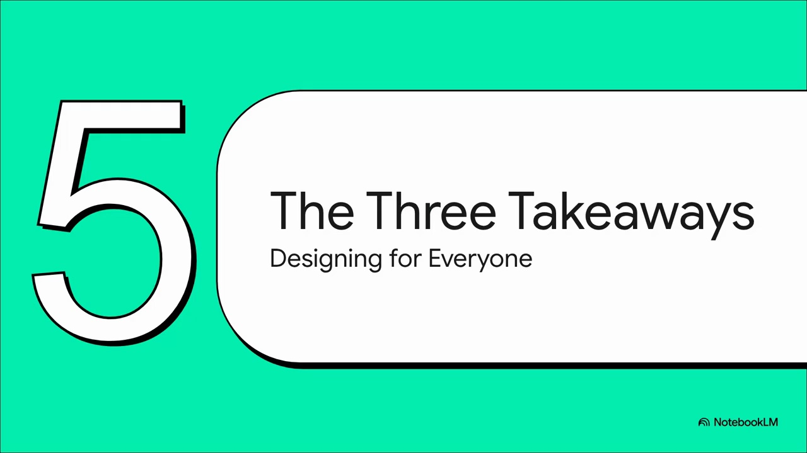
So after going through all that, what are the big ideas we should really walk away with? It all boils down to three simple foundational principles for designing with color.
Time: 0:05:21
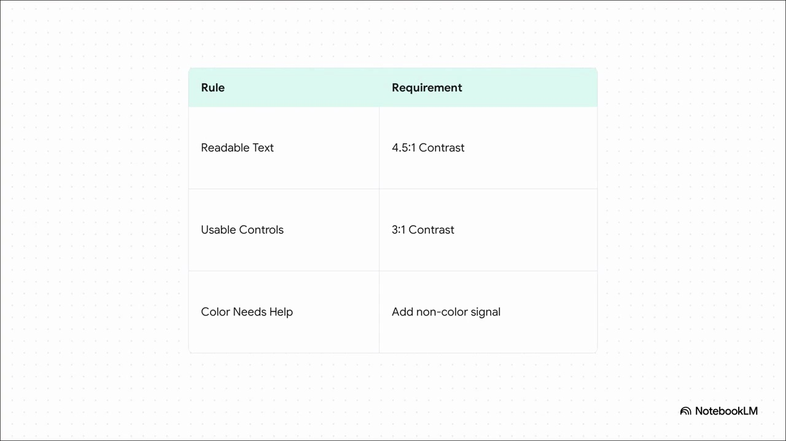
So let's just quickly recap the three key rules. First, make sure your text is readable with enough contrast. Second, make sure your buttons and controls are visible also with enough contrast. And third, never ever rely on color alone to get a message across. Always give it a helping hand with an icon or a label or an underline. And you know, these aren't just technical check boxes.
Time: 0:05:40
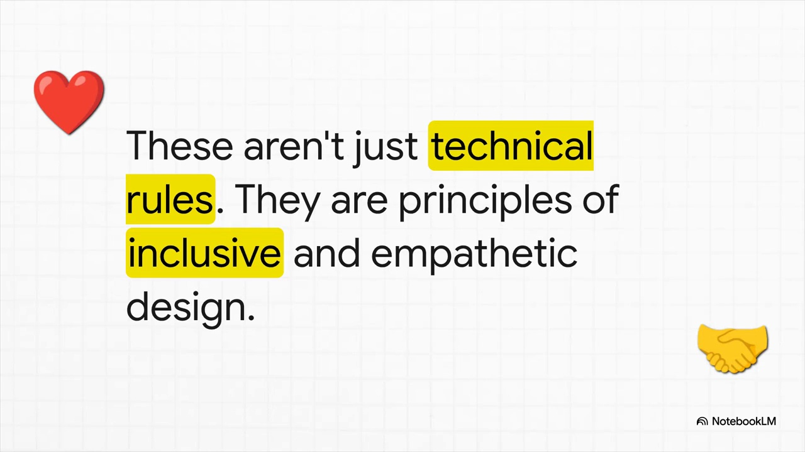
You have to tick off a list. This is really a shift in mindset. Following these guidelines is an act of empathy. It's about recognizing that people experience the world differently and then making a conscious choice to include them in the digital spaces that we're all building. And
Time: 0:05:56
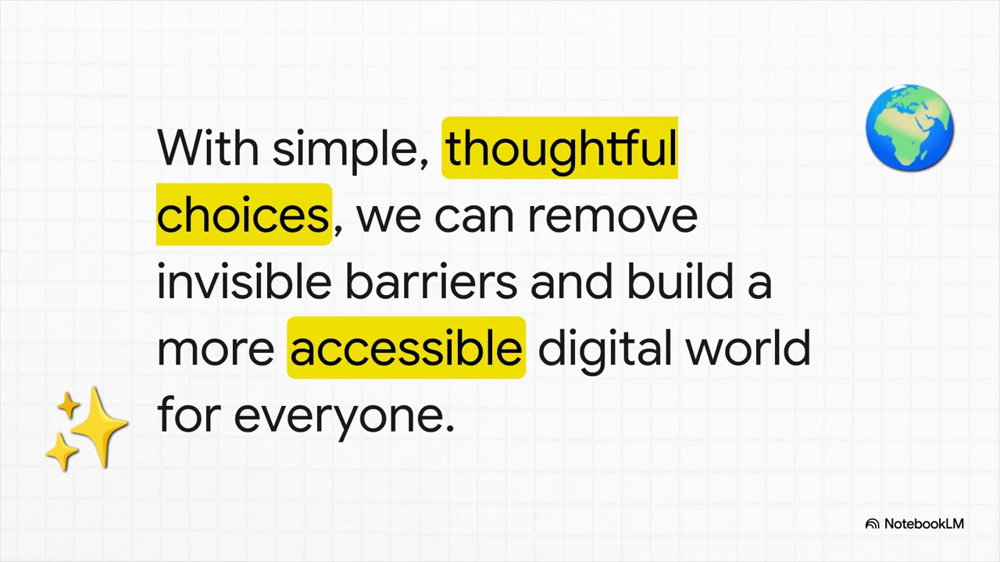
That's really the amazing part. None of these rules are crazy complex. They're simple, thoughtful choices that when you make them consistently have this massive positive impact, they tear down those invisible barriers and help us build a digital world that is genuinely open to everyone. So I'll just leave you with this final thought to chew on.
Time: 0:06:13
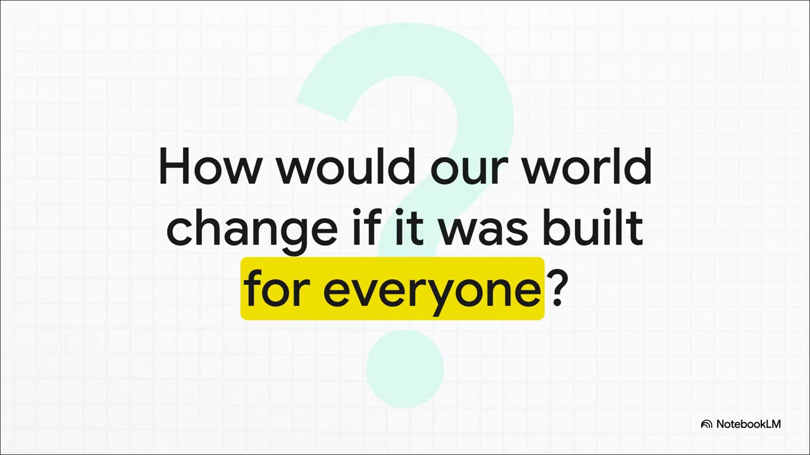
What would it feel like to browse a web where you never had to wonder if you were missing something important? How would our digital world actually change if every single piece of it was built for everyone right from the very beginning.